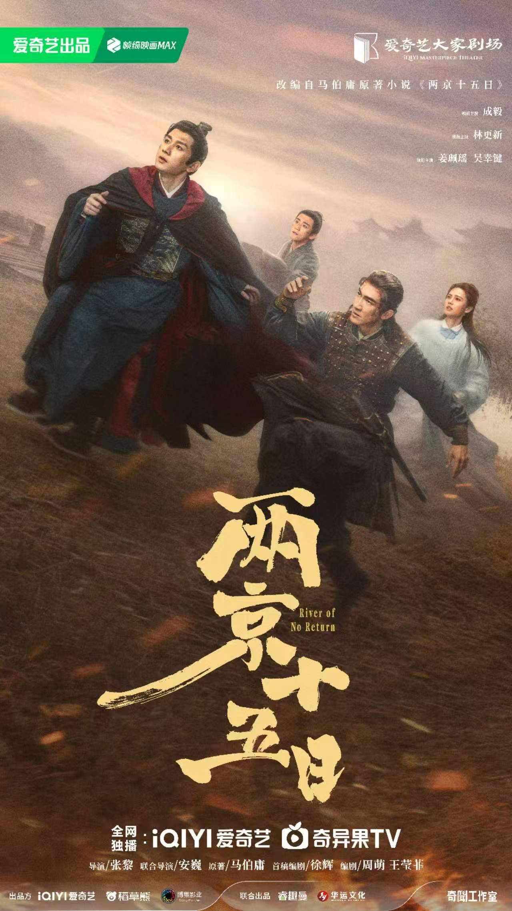

改编自马伯庸所著同名小说，由张黎执导，成毅、林更新主演，在爱奇艺独家播出。
明洪熙元年（1425 年），太子朱瞻基的宝船在南京秦淮河上被炸沉。他负伤无法骑马，却接到父皇仁宗病危、皇叔汉王朱高煦密谋篡位的消息——必须在十五天内沿京杭大运河奔袭两千两百余里，赶回北京继承皇位，以稳定朝局。逃亡途中，朱瞻基与捕快吴定缘、女医苏荆溪、小吏于谦结伴北上。四人各怀心事，一路遭遇民间组织「莲社」的围追堵截与汉王设下的重重伏杀，闯过扬州水牢、淮安堤坝风波等险阻，也从深宫储君蜕变为心怀天下的君主。
故事灵感源于《明史》中短短四十余字的记载，马伯庸在其中填进了十五天、两千两百里的极限逃亡，串起明初迁都、漕运、靖难与社会百态，被书迷称为「明代版速度与激情」。
首发预告说明：本页面信息整理自公开报道，剧集播出时间以爱奇艺官方发布为准。